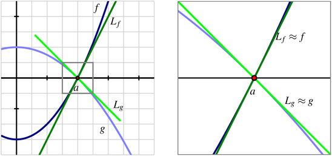
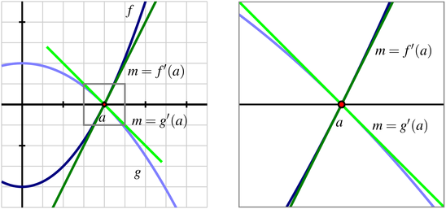
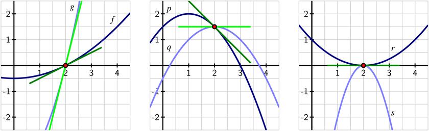
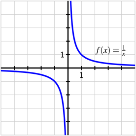
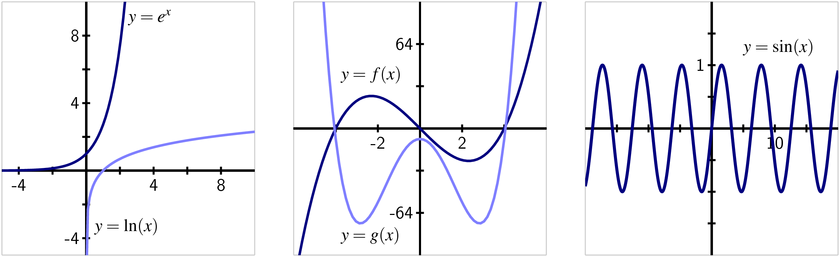

Section2.8Using Derivatives to Evaluate Limits¶ permalink
{In this section, we strive to understand the ideas generated by the following important questions:
How can derivatives be used to help us evaluate indeterminate limits of the form \(\frac{0}{0}\)?
What does it mean to say that \(\lim_{x \to \infty} f(x) = L\) and \(\lim_{x \to a} f(x) = \infty\)?
How can derivatives assist us in evaluating indeterminate limits of the form \(\frac{\infty}{\infty}\)?
}
Subsection2.8.1Introduction
Because differential calculus is based on the definition of the derivative, and the definition of the derivative involves a limit, there is a sense in which all of calculus rests on limits. In addition, the limit involved in the limit definition of the derivative is one that always generates an indeterminate form of \(\frac{0}{0}\). If \(f\) is a differentiable function for which \(f'(x)\) exists, then when we consider
it follows that not only does \(h \to 0\) in the denominator, but also \((f(x+h)-f(x)) \to 0\) in the numerator, since \(f\) is continuous. Thus, the fundamental form of the limit involved in the definition of \(f'(x)\) is \(\frac{0}{0}\). Remember, saying a limit has an indeterminate form only means that we don't yet know its value and have more work to do: indeed, limits of the form \(\frac{0}{0}\) can take on any value, as is evidenced by evaluating \(f'(x)\) for varying values of \(x\) for a function such as \(f'(x) = x^2\).
Of course, we have learned many different techniques for evaluating the limits that result from the derivative definition, and including a large number of shortcut rules that enable us to evaluate these limits quickly and easily. In this section, we turn the situation upside-down: rather than using limits to evaluate derivatives, we explore how to use derivatives to evaluate certain limits. This topic will combine several different ideas, including limits, derivative shortcuts, local linearity, and the tangent line approximation.
Preview Activity
Let \(h\) be the function given by \(\ds h(x) = \frac{x^5 + x - 2}{x^2 - 1}\).
What is the domain of \(h\)?
Explain why \(\displaystyle\lim_{x \to 1} \frac{x^5 + x
- 2}{x^2 - 1}\) results in an indeterminate form.
Next we will investigate the behavior of both the numerator and denominator of \(h\) near the point where \(x = 1\). Let \(f(x) = x^5 + x - 2\)
and \(g(x) = x^2 - 1\). Find the local linearizations of \(f\) and \(g\) at \(a = 1\), and call these functions \(L_f(x)\) and \(L_g(x)\), respectively.
Explain why \(\ds h(x) \approx \frac{L_f(x)}{L_g(x)}\) for \(x\) near \(a = 1\).
Using your work from (c) and (d), evaluate
\[
\lim_{x \to 1} \frac{L_f(x)}{L_g(x)}.
\]
What do you think your result tells us about \(\ds \lim_{x \to 1} h(x)\)?
Investigate the function \(h(x)\) graphically and numerically near \(x = 1\). What do you think is the value of \(\ds \lim_{x \to 1} h(x)\)?
Subsection2.8.2Using derivatives to evaluate indeterminate limits of the form \(\frac{0}{0}\).
Figure2.8.1At left, the graphs of \(f\) and \(g\) near the value \(a\), along with their tangent line approximations \(L_f\) and \(L_g\) at \(x = a\). At right, zooming in on the point \(a\) and the four graphs.
The fundamental idea of Preview Activity – that we can evaluate an indeterminate limit of the form \(\frac{0}{0}\) by replacing each of the numerator and denominator with their local linearizations at the point of interest – can be generalized in a way that enables us to easily evaluate a wide range of limits. We begin by assuming that we have a function \(h(x)\) that can be written in the form \(h(x) = \frac{f(x)}{g(x)}\) where \(f\) and \(g\) are both differentiable at \(x=a\) and for which \(f(a) = g(a) = 0\). We are interested in finding a way to evaluate the indeterminate limit given by
\(\ds \lim_{x \to a} h(x).\)
In Figure 2.8.1, we see a visual representation of the situation involving such functions \(f\) and \(g\). In particular, we see that both \(f\) and \(g\) have an \(x\)-intercept at the point where \(x = a\). In addition, since each function is differentiable, each is locally linear, and we can find their respective tangent line approximations \(L_f\) and \(L_g\) at \(x = a\), which are also shown in the figure. Since we are interested in the limit of \(\frac{f(x)}{g(x)}\) as \(x \to a\), the individual behaviors of \(f(x)\) and \(g(x)\) as \(x \to a\) are key to understand. Here, we take advantage of the fact that each function and its tangent line approximation become indistinguishable as \(x \to a\).
First, let's reall that \(L_f(x) = f'(a)(x-a) + f(a)\) and \(L_g(x) = g'(a)(x-a) +g(a)\). The critical observation we make is that when taking the limit, because \(x\) is getting arbitrarily close to \(a\), we can replace \(f\) with \(L_f\) and replace \(g\) with \(L_g\), and thus we observe that
Next, we remember a key fundamental assumption: that both \(f(a) = 0\) and \(g(a) = 0\), as this is precisely what makes the original limit indeterminate. Substituting these values for \(f(a)\) and \(g(a)\) in the limit above, we now have
where the latter equality holds since \(x\) is approaching (but not equal to) \(a\), so \(\frac{x-a}{x-a} = 1\).
Finally, we note that \(\frac{f'(a)}{g'(a)}\) is constant with respect to \(x\), and thus
We have, of course, implicitly made the assumption that \(g'(a) \ne 0\), which is essential to the overall limit having the value \(\frac{f'(a)}{g'(a)}\). We summarize our work above with the statement of L'Hopital's Rule, which is the formal name of the result we have shown.
{
L'Hopital's Rule: \knownindex{\lt main>L'Hopital's rule\lt /main>} Let
\(f\) and \(g\) be differentiable at \(x=a\), and suppose that
\mbox{\(f(a) = g(a) = 0\)} and that \(g'(a) \neq 0\). Then
\( \lim_{x \to a} \frac{f(x)}{g(x)} = \frac{f'(a)}{g'(a)}.\)
}
In practice, we typically work with a slightly more general version of L'Hopital's Rule, which states that (under the identical assumptions as the boxed rule above)
provided the righthand limit exists. This form reflects the fundamental benefit of L'Hopital's Rule: if \(\frac{f(x)}{g(x)}\) produces an indeterminate limit of form \(\frac{0}{0}\) as \(x \to a\), it is equivalent to consider the limit of the quotient of the two functions' derivatives, \(\frac{f'(x)}{g'(x)}.\) For example, if we consider the limit from Preview Activity ,
By being able to replace the numerator and denominator with their respective derivatives, we often move from an indeterminate limit to one whose value we can easily determine.
Evaluate each of the following limits. If you use L'Hopital's Rule, indicate where it was used, and be certain its hypotheses are met before you apply it.
As \(x \to 0\), we see that \(\ln(1+x) \to \ln(1) = 0\), thus this limit has an indeterminate form. By L'Hopital's Rule, we have
\[
\ds \lim_{x \to 0} \frac{\ln(1 + x)}{x} = \ds \lim_{x \to 0} \frac{\frac{1}{1 + x}}{1}.
\]
As this limit is no longer indeterminate, we may simply allow \(x \to 0\), and thus we find that
\[
\ds \lim_{x \to 0} \frac{\ln(1 + x)}{x} = \frac{\frac{1}{1 + 0}}{1} = 1.
\]
Observe that
\[
\lim_{x \to \pi} \frac{\cos(x)}{x} = \frac{\cos(\pi)}{\pi} = -\frac{1}{\pi},
\]
since this limit is not indeterminate because the function \(\frac{\cos(x)}{x}\) is continuous at \(x = \pi\).
Since \(\ln(x) \to 0\) and \(e^{x-1} \to 1\) as \(x \to 0\), this limit is indeterminate with form \(\frac{0}{0}\). Hence, by L'Hopital's Rule,
\[
\lim_{x \to 1} \frac{2 \ln(x)}{1-e^{x-1}} = \lim_{x \to 1} \frac{\frac{2}{x}}{-e^{x-1}}.
\]
The updated limit is not indeterminate, and allowing \(x \to 1\), we find
\[
\lim_{x \to 1} \frac{2 \ln(x)}{1-e^{x-1}} = \frac{\frac{2}{1}}{-e^{0}} = -2.
\]
Since the given limit is indeterminate of form \(\frac{0}{0}\), by L'Hopital's Rule we have
\[
\lim_{x \to 0} \frac{\sin(x) - x}{\cos(2x)-1} = \lim_{x \to 0} \frac{\cos(x) - 1}{-2\sin(2x)}.
\]
Now, as \(x \to 0\), \(\cos(x) \to 1\) and \(\sin(2x) \to 0\), which makes the latest limit also indeterminate in form \(\frac{0}{0}\). Applying L'Hopital's Rule a second time, we now have
\[
\lim_{x \to 0} \frac{\sin(x) - x}{\cos(2x)-1} = \lim_{x \to 0} \frac{-\sin(x)}{-4\cos(2x)}.
\]
In the newest limit, we note that \(\sin(x) \to 0\) but \(\cos(2x) \to 1\) as \(x \to 0\), so the numerator is tending to 0 while the denominator is approaching \(-4\). Thus, the value of the limit is determined to be
\[
\lim_{x \to 0} \frac{\sin(x) - x}{\cos(2x)-1} = 0.
\]
While L'Hopital's Rule can be applied in an entirely algebraic way,
Figure2.8.3Two functions \(f\) and \(g\) that satisfy L'Hopital's Rule.
it is important to remember that the genesis of the rule is graphical: the main idea is that the slopes of the tangent lines to \(f\) and \(g\) at \(x = a\) determine the value of the limit of \(\frac{f(x)}{g(x)}\) as \(x \to a\). We see this in Figure 2.8.3, which is a modified version of Figure 2.8.1, where we can see from the grid that \(f'(a) = 2\) and \(g'(a) = -1\), hence by L'Hopital's Rule,
Indeed, what we observe is that it's not the fact that \(f\) and \(g\) both approach zero that matters most, but rather the rate at which each approaches zero that determines the value of the limit. This is a good way to remember what L'Hopital's Rule says: if \(f(a) = g(a) = 0\), the the limit of \(\frac{f(x)}{g(x)}\) as \(x \to a\) is given by the ratio of the slopes of \(f\) and \(g\) at \(x = a\).
In this activity, we reason graphically from the following figure to evaluate limits of ratios of functions about which some information is known.
Figure2.8.5Three graphs referenced in the questions of Activity 2.8.4.
Use the left-hand graph to determine the values of \(f(2)\), \(f'(2)\), \(g(2)\), and \(g'(2)\). Then, evaluate
\[
\lim_{x \to 2} \frac{f(x)}{g(x)}.
\]
Use the middle graph to find \(p(2)\), \(p'(2)\), \(q(2)\), and \(q'(2)\). Then, determine the value of
\[
\lim_{x \to 2} \frac{p(x)}{q(x)}.
\]
Use the right-hand graph to compute \(r(2)\), \(r'(2)\), \(s(2)\), \(s'(2)\). Explain why you cannot determine the exact value of
\[
\lim_{x \to 2} \frac{r(x)}{s(x)}
\]
without further information being provided, but that you can determine the sign of \(\lim_{x \to 2} \frac{r(x)}{s(x)}\). In addition, state what the sign of the limit will be, with justification.
Don't forget that \(f'(a)\) measures the slope of the tangent line to \(y = f(x)\) at the point \((a,f(a))\). Think about whether or not L'Hopital's Rule applies to the limit under consideration.
Do the functions \(p\) and \(q\) meet the criteria of L'Hopital's Rule? If not, what are your options for evaluating the limit?
Remember that L'Hopital's Rule can be applied more than once to a particular limit and that the sign of \(f''(a)\) is connected to to the concavity of the graph of \(f\) at the value \(x = a\).
From the given graph, we observe that \(f(2) = 0\), \(f'(2) = \frac{1}{2}\), \(g(2)=0\), and \(g'(2) = 4\). By L'Hopital's Rule,
\[
\lim_{x \to 2} \frac{f(x)}{g(x)} = \frac{f'(2)}{g'(2)} = \frac{\frac{1}{2}}{4} = \frac{1}{8}.
\]
The given graph tells us that \(p(2) = 1.5\), \(p'(2)=-1\), \(q(2)=1.5\), and \(q'(2)=0\). Note well that the given limit,
\[
\lim_{x \to 2} \frac{p(x)}{q(x)},
\]
is not indeterminate, and thus L'Hopital's Rule does not apply. Rather, since \(p(x) \to 1.5\) and \(q(x) \to 1.5\) as \(x \to 2\), we have that
\[
\lim_{x \to 2} \frac{p(x)}{q(x)} = \frac{p(2)}{q(2)} = \frac{1.5}{1.5} = 1.
\]
From the third graph, \(r(2)=0\), \(r'(2)=0\), \(s(2)=0\), \(s'(2)=0\). By L'Hopital's Rule,
\[
\lim_{x \to 2} \frac{r(x)}{s(x)} = \lim_{x \to 2} \frac{r'(x)}{s'(x)},
\]
but this limit is still indeterminate, so by L'Hopital's Rule again,
\[
\lim_{x \to 2} \frac{r(x)}{s(x)} = \lim_{x \to 2} \frac{r''(x)}{s''(x)} = \frac{r''(2)}{s''(2)},
\]
provided that \(s''(2) \ne 0\). Since we do not know the values of \(r''(2)\) and \(s''(2)\), we can't determine the actual value of the limit, but from the graph it appears that \(r''(2) > 0\) (since \(r\) is concave up) and that \(s''(2) \lt 0\) (because \(s\) is concave down), and therefore
\[
\lim_{x \to 2} \frac{r(x)}{s(x)} \lt 0.
\]
Subsection2.8.3Limits involving \(\infty\)
The concept of infinity\knownindex{\lt main>infinity\lt /main>}, denoted \(\infty\), arises naturally in calculus, like it does in much of mathematics. It is important to note from the outset that \(\infty\) is a concept, but not a number itself. Indeed, the notion of \(\infty\) naturally invokes the idea of limits. Consider, for example, the function \(f(x) = \frac{1}{x}\), whose graph is pictured in Figure 2.8.6.
Figure2.8.6The graph of \(f(x) = \frac{1}{x}\).
We note that \(x = 0\) is not in the domain of \(f\), so we may naturally wonder what happens as \(x \to 0\). As \(x \to 0^+\), we observe that \(f(x)\) increases without bound. That is, we can make the value of \(f(x)\) as large as we like by taking \(x\) closer and closer (but not equal) to 0, while keeping \(x > 0\). This is a good way to think about what infinity represents: a quantity is tending to infinity if there is no single number that the quantity is always less than.
Recall that when we write \(\ds \lim_{x \to a} f(x) = L\), this means that can make \(f(x)\) as close to \(L\) as we'd like by taking \(x\) sufficiently close (but not equal) to \(a\). We thus expand this notation and language to include the possibility that either \(L\) or \(a\) can be \(\infty\). For instance, for \(f(x) = \frac{1}{x}\), we now write
\[
\lim_{x \to 0^+} \frac{1}{x} = \infty,
\]
by which we mean that we can make \(\frac{1}{x}\) as large as we like by taking \(x\) sufficiently close (but not equal) to 0. In a similar way, we naturally write
\[
\lim_{x \to \infty} \frac{1}{x} = 0,
\]
since we can make \(\frac{1}{x}\) as close to 0 as we'd like by taking \(x\) sufficiently large (i.e., by letting \(x\) increase without bound).
In general, we understand the notation \(\ds \lim_{x \to a} f(x) = \infty\) to mean that we can make \(f(x)\) as large as we'd like by taking \(x\) sufficiently close (but not equal) to \(a\), and the notation \(\ds \lim_{x \to \infty} f(x) = L\) to mean that we can make \(f(x)\) as close to \(L\) as we'd like by taking \(x\) sufficiently large. This notation applies to left- and right-hand limits, plus we can also use limits involving \(-\infty\). For example, returning to Figure 2.8.6 and \(f(x) = \frac{1}{x}\), we can say that
when we can make the value of \(f(x)\) as large as we'd like by taking \(x\) sufficiently large. For example,
\[
\lim_{x \to \infty} x^2 = \infty.
\]
Note particularly that limits involving infinity identify vertical and horizontal asymptotes \knownindex{\lt main>asymptote\lt /main>} \knownindex{\lt main>asymptote\lt /main>\lt sub>vertical\lt /sub>} \knownindex{\lt main>asymptote\lt /main>\lt sub>horizontal\lt /sub>} of a function. If \(\lim_{x \to a} f(x) = \infty\), then \(x = a\) is a vertical asymptote of \(f\), while if \(\lim_{x \to \infty} f(x) = L\), then \(y = L\) is a horizontal asymptote of \(f\). Similar statements can be made using \(-\infty\), as well as with left- and right-hand limits as \(x \to a^-\) or \(x \to a^+\).
In precalculus classes, it is common to study the end behavior of certain families of functions, by which we mean the behavior of a function as \(x \to \infty\) and as \(x \to -\infty\). Here we briefly examine a library of some familiar functions and note the values of several limits involving \(\infty\).
For the natural exponential function \(e^x\), we note that \(\lim_{x \to \infty} e^x = \infty\) and \(\lim_{x \to -\infty} e^x = 0,\) while for the related exponential decay function \(e^{-x}\), observe that these limits are reversed, with \(\lim_{x \to \infty} e^{-x} = 0\) and \(\lim_{x \to -\infty} e^{-x} = \infty.\) Turning to the natural logarithm function, we have \(\lim_{x \to 0^+} \ln(x) = -\infty\) and \(\lim_{x \to \infty} \ln(x) = \infty.\) While both \(e^x\) and \(\ln(x)\) grow without bound as \(x \to \infty\), the exponential function does so much more quickly than the logarithm function does. We'll soon use limits to quantify what we mean by “quickly.”
Figure2.8.7Graphs of some familiar functions whose end behavior as \(x \to \pm \infty\) is known. In the middle graph, \(f(x) = x^3 - 16x\) and \(g(x) = x^4 - 16x^2 - 8\).
For polynomial functions of the form \(p(x) = a_n x^n + a_{n-1}x^{n-1} + \cdots a_1 x + a_0\), the end behavior depends on the sign of \(a_n\) and whether the highest power \(n\) is even or odd. If \(n\) is even and \(a_n\) is positive, then \(\lim_{x \to \infty} p(x) = \infty\) and \(\lim_{x \to -\infty} p(x) = \infty\), as in the plot of \(g\) in Figure 2.8.7. If instead \(a_n\) is negative, then \(\lim_{x \to \infty} p(x) = -\infty\) and \(\lim_{x \to -\infty} p(x) = -\infty\). In the situation where \(n\) is odd, then either \(\lim_{x \to \infty} p(x) = \infty\) and \(\lim_{x \to -\infty} p(x) = \infty\) (which occurs when \(a_n\) is positive, as in the graph of \(f\) in Figure 2.8.7), or \(\lim_{x \to \infty} p(x) = \infty\) and \(\lim_{x \to -\infty} p(x) = \infty\) (when \(a_n\) is negative).
A function can fail to have a limit as \(x \to \infty\). For example, consider the plot of the sine function at right in Figure 2.8.7. Because the function continues oscillating between \(-1\) and \(1\) as \(x \to \infty\), we say that \(\lim_{x \to \infty} \sin(x)\) does not exist.
Finally, it is straightforward to analyze the behavior of any rational function as \(x \to \infty\). Consider, for example, the function
Note that both \((3x^2 - 4x + 5) \to \infty\) as \(x \to \infty\) and \((7x^2 + 9x - 10) \to \infty\) as \(x \to \infty\). Here we say that \(\lim_{x \to \infty} q(x)\) has indeterminate form \(\frac{\infty}{\infty}\), much like we did when we encountered limits of the form \(\frac{0}{0}\). We can determine the value of this limit through a standard algebraic approach. Multiplying the numerator and denominator each by \(\frac{1}{x^2}\), we find that
since \(\frac{1}{x^2} \to 0\) and \(\frac{1}{x} \to 0\) as \(x \to \infty\). This shows that the rational function \(q\) has a horizontal asymptote at \(y = \frac{3}{7}\). A similar approach can be used to determine the limit of any rational function as \(x \to \infty\).
But how should we handle a limit such as
\[
\lim_{x \to \infty} \frac{x^2}{e^x}?
\]
Here, both \(x^2 \to \infty\) and \(e^x \to \infty\), but there is not an obvious algebraic approach that enables us to find the limit's value. Fortunately, it turns out that L'Hopital's Rule extends to cases involving infinity.
{
L'Hopital's Rule (\(\infty\)): \knownindex{\lt main>L'Hopital's rule\lt /main>}
If \(f\) and \(g\) are differentiable and both approach zero or both approach \(\pm \infty\) as \(x \to a\) (where \(a\) is allowed to be \(\infty\)), then
To evaluate \(\lim_{x \to \infty} \frac{x^2}{e^x}\), we observe that we can apply L'Hopital's Rule, since both \(x^2 \to \infty\) and \(e^x \to \infty\). Doing so, it follows that
This updated limit is still indeterminate and of the form \(\frac{\infty}{\infty}\), but it is simpler since \(2x\) has replaced \(x^2\). Hence, we can apply L'Hopital's Rule again, by which we find that
Evaluate each of the following limits. If you use L'Hopital's Rule, indicate where it was used, and be certain its hypotheses are met before you apply it.
As both numerator and denominator tend to \(\infty\) as \(x \to \infty\), by L'Hopital's Rule followed by some elementary algebra,
\[
\lim_{x \to \infty} \frac{x}{\ln(x)} = \lim_{x \to \infty} \frac{1}{\frac{1}{x}} = \lim_{x \to \infty} x = \infty.
\]
Because this limit has indeterminate form \(\frac{\infty}{\infty}\), L'Hopital's Rule tells us that
\[
\lim_{x \to \infty} \frac{e^{x} + x}{2e^{x} + x^2} = \lim_{x \to \infty} \frac{e^{x} + 1}{2e^{x} + 2x}.
\]
The latest limit is indeterminate for the same reason, and a second application of the rule shows
\[
\lim_{x \to \infty} \frac{e^{x} + x}{2e^{x} + x^2} = \lim_{x \to \infty} \frac{e^{x}}{2e^{x} + 2}.
\]
Note how each application of the rule produces a simpler numerator and denominator. With one more use of L'Hopital's Rule, followed by a simple algebraic simplification, we have
\[
\lim_{x \to \infty} \frac{e^{x} + x}{2e^{x} + x^2} = \lim_{x \to \infty} \frac{e^{x}}{2e^{x}} = \lim_{x \to \infty} \frac{1}{2} = \frac{1}{2}.
\]
As \(x \to 0^+\), \(\ln(x) \to -\infty\) and \(\frac{1}{x} \to +\infty\), thus by L'Hopital's Rule,
\[
\lim_{x \to 0^+} \frac{\ln(x)}{\frac{1}{x}} = \lim_{x \to 0^+} \frac{\frac{1}{x}}{-\frac{1}{x^2}}.
\]
Reciprocating, multiplying, and simplifying, it follows that
\[
\lim_{x \to 0^+} \frac{\ln(x)}{\frac{1}{x}} = \lim_{x \to 0^+} \frac{1}{x}\cdot \frac{x^2}{-1} = \lim_{x \to 0^+} -x = 0.
\]
Here, the numerator tends to \(\infty\) while the denominator tends to \(0^-\). Note well that this limit is not indeterminate, but rather produces a collection of fractions with large positive numerators and small negative denominators. Hence
\[
\ds \lim_{x \to \frac{\pi}{2}^-} \frac{\tan(x)}{x-\frac{\pi}{2}} = -\infty.
\]
In particular, we observe that L'Hopital's Rule is not applicable here.
In its original form, \(\ds \lim_{x \to \infty} xe^{-x}\), is indeterminate of form \(\infty \cdot 0\). Rewriting \(e^{-x}\) as \(\frac{1}{e^x}\), a straightforward application of L'Hopital's Rule tells us that
\[
\lim_{x \to \infty} xe^{-x} = \lim_{x \to \infty} \frac{x}{e^x} = \lim_{x \to \infty} \frac{1}{e^x}.
\]
Since \(e^x \to \infty\) as \(x \to \infty\), we find that
\[
\lim_{x \to \infty} xe^{-x} = 0.
\]
When we are considering the limit of a quotient of two functions \(\frac{f(x)}{g(x)}\) that results in an indeterminate form of \(\frac{\infty}{\infty}\), in essence we are asking which function is growing faster without bound. We say that the function \(g\) dominates the function \(f\) as \(x \to \infty\) provided that
\[
\lim_{x \to \infty} \frac{f(x)}{g(x)} = 0,
\]
whereas \(f\) dominates \(g\) provided that \(\lim_{x \to \infty} \frac{f(x)}{g(x)} = \infty\). Finally, if the value of \(\lim_{x \to \infty} \frac{f(x)}{g(x)}\) is finite and nozero, we say that \(f\) and \(g\) grow at the same rate. For example, from earlier work we know that \(\lim_{x \to \infty} \frac{x^2}{e^x} = 0,\) so \(e^x\) dominates \(x^2\), while \(\lim_{x \to \infty} \frac{3x^2 - 4x + 5}{7x^2 + 9x - 10} = \frac{3}{7}\), so \(f(x) = 3x^2 - 4x + 5\) and \(g(x) = 7x^2 + 9x - 10\) grow at the same rate.
\item Derivatives be used to help us evaluate indeterminate limits of the form \(\frac{0}{0}\) through L'Hopital's Rule, which is developed by replacing the functions in the numerator and denominator with their tangent line approximations. In particular, if \(f(a) = g(a) = 0\) and \(f\) and \(g\) are differentiable at \(a\), L'Hopital's Rule tells us that
\item When we write \(x \to \infty\), this means that \(x\) is increasing without bound. We thus use \(\infty\) along with limit notation to write \(\lim_{x \to \infty} f(x) = L\), which means we can make \(f(x)\) as close to \(L\) as we like by choosing \(x\) to be sufficiently large, and similarly \(\lim_{x \to a} f(x) = \infty\), which means we can make \(f(x)\) as large as we like by choosing \(x\) sufficiently close to \(a\).
\item A version of L'Hopital's Rule also allows us to use derivatives to assist us in evaluating indeterminate limits of the form \(\frac{\infty}{\infty}\). In particular, If \(f\) and \(g\) are differentiable and both approach zero or both approach \(\pm \infty\) as \(x \to a\) (where \(a\) is allowed to be \(\infty\)), then
\item Let \(f\) and \(g\) be differentiable functions about which the following information is known: \(f(3) = g(3) = 0\), \(f'(3) = g'(3) = 0\), \(f''(3) = -2\), and \(g''(3) = 1\). Let a new function \(h\) be given by the rule \(h(x) = \frac{f(x)}{g(x)}\). On the same set of axes, sketch possible graphs of \(f\) and \(g\) near \(x = 3\), and use the provided information to determine the value of
\[
\lim_{x \to 3} h(x).
\]
Provide explanation to support your conclusion.
\item Find all vertical and horizontal asymptotes of the function
\[
R(x) = \frac{3(x-a)(x-b)}{5(x-a)(x-c)},
\]
where \(a\), \(b\), and \(c\) are distinct, arbitrary constants. In addition, state all values of \(x\) for which \(R\) is not continuous. Sketch a possible graph of \(R\), clearly labeling the values of \(a\), \(b\), and \(c\).
\item Consider the function \(g(x) = x^{2x}\), which is defined for all \(x > 0\). Observe that \(\lim_{x \to 0^+} g(x)\) is indeterminate due to its form of \(0^0\). (Think about how we know that \(0^k = 0\) for all \(k > 0\), while \(b^0 = 1\) for all \(b \ne 0\), but that neither rule can apply to \(0^0\).)
Let \(h(x) = \ln(g(x))\). Explain why \(h(x) = 2x \ln(x).\)
Next, explain why it is equivalent to write \(h(x) = \frac{2\ln(x)}{\frac{1}{x}}\).
Use L'Hopital's Rule and your work in (b) to compute \(\lim_{x \to 0^+} h(x)\).
Based on the value of \(\lim_{x \to 0^+} h(x)\), determine \(\lim_{x \to 0^+} g(x).\)
\item Recall we say that function \(g\) dominates function \(f\) provided that \(\lim_{x \to \infty} f(x) = \infty\), \(\lim_{x \to \infty} g(x) = \infty\), and \(\lim_{x \to \infty} \frac{f(x)}{g(x)} = 0\).
Which function dominates the other: \(\ln(x)\) or \(\sqrt{x}\)?
Which function dominates the other: \(\ln(x)\) or \(\sqrt[n]{x}\)? (\(n\) can be any positive integer)
Explain why \(e^x\) will dominate any polynomial function.
Explain why \(x^n\) will dominate \(\ln(x)\) for any positive integer \(n\).